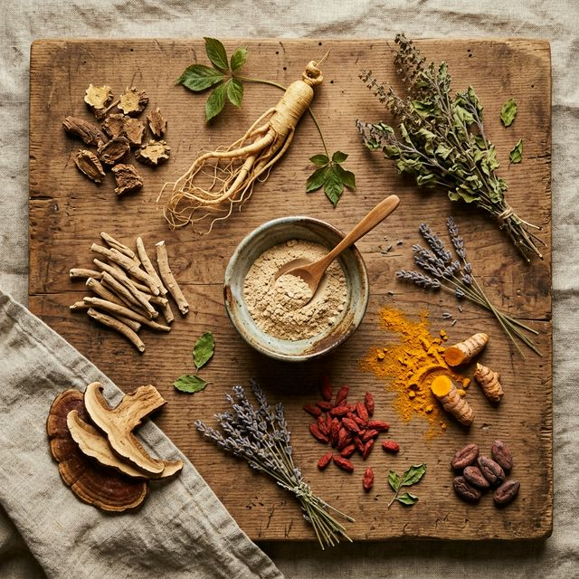
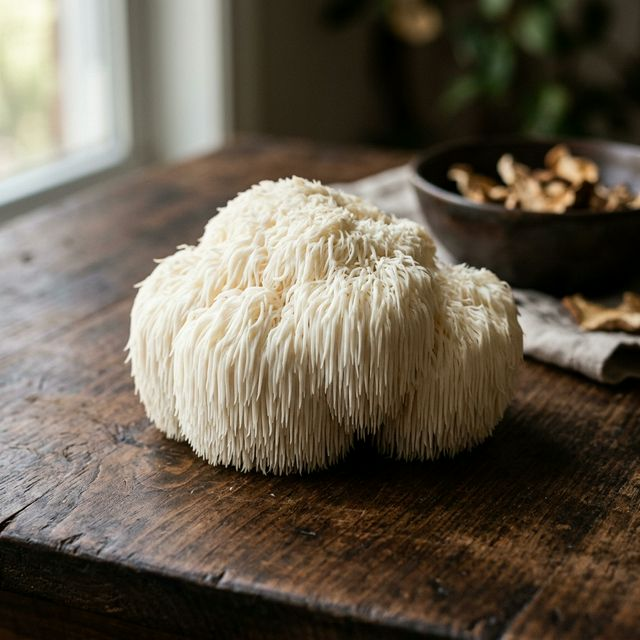

Anti-stress
Anti-stress
Ashwagandha : Bienfaits, Dosage et Meilleurs Compléments 2026
L'ashwagandha (Withania somnifera) est l'adaptogène le plus étudié. Découvrez ses bienfaits prouvés sur le stress, le sommeil et la performance physique.
Découvrez les plantes adaptogènes scientifiquement prouvées pour réduire le stress, booster votre énergie et renforcer votre système immunitaire naturellement.

Les adaptogènes sont des plantes et champignons médicinaux utilisés depuis des millénaires en médecine traditionnelle. Leur particularité ? Ils aident votre organisme à s'adapter au stress — qu'il soit physique, mental ou émotionnel.
Reconnus par la recherche scientifique moderne, ces composés naturels agissent sur l'axe hypothalamo-hypophyso-surrénalien (HPA), régulant le cortisol et les hormones du stress.
La reine anti-stress
L'énergie naturelle
Le gardien immunitaire
La vitalité ancestrale
Chaque guide inclut les bienfaits prouvés, le dosage recommandé et notre sélection des meilleurs compléments.
Anti-stress
L'ashwagandha (Withania somnifera) est l'adaptogène le plus étudié. Découvrez ses bienfaits prouvés sur le stress, le sommeil et la performance physique.
 Énergie
Énergie
La rhodiola rosea combat la fatigue mentale et physique. Découvrez comment cette plante arctique peut transformer votre quotidien.
 Vitalité
Vitalité
Utilisée depuis 3 000 ans par les Incas, la maca est un superaliment complet. Découvrez ses effets prouvés et les meilleures formes de supplémentation.
 Immunité
Immunité
Le reishi est utilisé en médecine chinoise depuis plus de 2 000 ans. Découvrez ses bienfaits sur l'immunité, le sommeil et la longévité.
 Performance
Performance
Le ginseng (Panax ginseng) est l'un des adaptogènes les plus puissants. Découvrez ses effets sur l'énergie, la cognition et les performances sportives.
Le cordyceps augmente la production d'ATP de 18-28%, améliore l'endurance et la VO2 max. Le champignon de référence pour les sportifs.

CognitionLe seul champignon capable de stimuler la neurogenèse chez l'adulte. Améliore la mémoire, la concentration et protège le cerveau.
La "Reine des Herbes" en Ayurveda réduit le cortisol de 23%, renforce l'immunité et soutient la santé respiratoire.